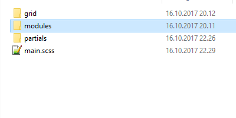
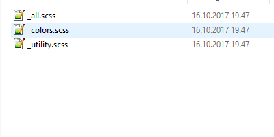

Forklar kort hva Sass er, og vis strukturen på Sass-filene dine i dette prosjektet (det kan være et skjermbilde, eller du kan vise strukturen ved å lage en uordnet liste). Hvis du ikke har valgt å gjøre ekstra 1 og bruke Sass, gjør dette som et tankeeksperiment og vis hvordan du ville strukturert filene hvis du skulle gjort om CSS-filen til Sass.
En enklere å mer effektiv måte å jobbe med CSS
Syntactically Awesome Style Sheet(SASS) er et monteringsspråk som kan konverteres over til .CSS. Dette har blitt laget på grunnlag av at stylesheets blir bare større og mer komplekse for hver eneste dag. Med større stylesheets blir det større problemer å holde oversikt over hva som er hva, og hva som allerede har blitt laget.
SASS i seg selv er veldig lite brukende. Selve .sass-filen er nødt til å bli konvertert over til en .css-fil. Det finnes flere programmer som gjør dette, men vi skal bruke den som heter Scout-App.

Variabler og mixins
Med Sass så har du mange flere fordeler, den ene er at du kan
neste koden din
slik at den blir mye mer organisert. Du har også muligheten til å lage variabler, partials og mixins.
Med variabler kan du f.eks. lagre dine egne pre-set farger eller spesifikke font-sizer kanskje? Mixins
kan bli sett på som en funksjon som gjør en liten blokk kode.
Dette fungerer meget bra ilag med stylinger som ikke er kompitable med alle typer nettlesere.
Da kan du lage en mixins som ser noe alla slikt ut, tatt ifra Sass in egen guide

Her har du spart deg selv 6 linjer med kode. Koden er gjennbrukbar til videre bruk om du plassere den i sin egen mixins .sass fil. Da skal vi videre til hvordan du kan sette opp ditt oppsett for at sass skal fungere bra. Skal en bruke sass på en god måte, så er det greit å tenke at alle .sass egenskaper(variabler, mixins, partials) burde være i sine egne filer. Struktur på dette kan se noe slikt ut:
 Alle filer som starter med understrek er filer som ikke vil bli konvertert til en .css fil via Scout-App, og det er i disse filene du lagrer dine ferdig lagde variabler, mixins og partials. En kjekk måte å gjøre dette på er å ha flere filer med forskjellige oppgaver og en hovedfil i hver seksjon som henter hver og en av disse filene. I modules mappa har jeg 3 filer, her har jeg mine forvalgte farger og noen små variabler til font-size og diverse. I _all.scss har jeg kun importert disse filene, slik at det blir lett for meg å hente inn disse til min main.scss. Det er også lettere for meg å holde orden på ting på denne måten. Dette gjør jeg også for andre seksjoner, slik som grid og partials.